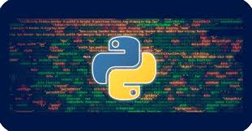

Introduction to Python
- Python programming language is a general purpose, interactive, purpose-oriented and high-level programming language. This language was created by the scientist Judy Van Wozem between 1985 and 1990. As with the Perl scripting language, the source code for Python is available to the National Union Government (GNU) as a public certificate.
- Open source and scalable. The Python language is a multi-purpose explanatory language and is widely used in many areas such as building independent programs using well-known graphical interfaces and in the work of web programs, in addition to using them as a scripting language to control the performance of some of the most well-known programs or in building extensions to them. In general, Python can be used to program simple programs for beginners and to implement mega projects like any other programming language at the same time. It is often recommended for beginners in the field of programming to learn this language because it is among the fastest learned programming languages.
- Python was born in the CWI (Center for Science and Computer) in Amsterdam by Guido Van Rozum in the late 1980s, and was first announced in 1991. The language kernel was written in C. The van Rozum called "Python" in his language as an expression of His admiration for a famous sitcom ensemble from Britain, she called herself Monty Python.
- Python is distinguished by its active community, and it has many special purpose libraries programmed by people from this language community, for example the PyGame library that provides a set of functions for programming games. Python can handle many types of databases such as MySQL and others.
What can you do with Python
- Web Development
- Desktop Applications
- Bot Systems
- Data Analysis
- Artificial Intelligence
- Machine Learning
- Deep Learning
- Game Development
